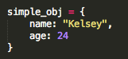
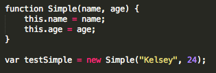
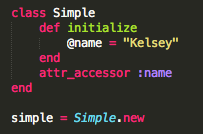

How are Javascript objects created?
(1) Literal Method

simple_obj is the name of the object. Name and age are the properties. "Kelsey" and 24 is an expression whose value is assigned to the properties, name and age.
(2) Functions and the new operator

How are Ruby classes created?
(1) New Method on Class

Javascript and Ruby objects are created in similar ways as the examples above show. They both require other objects to create a new object. In Javascript, you can either define literal objects or invoke the constructor function to create new objects. In Ruby, you use objects inherited from Class to create new objects.